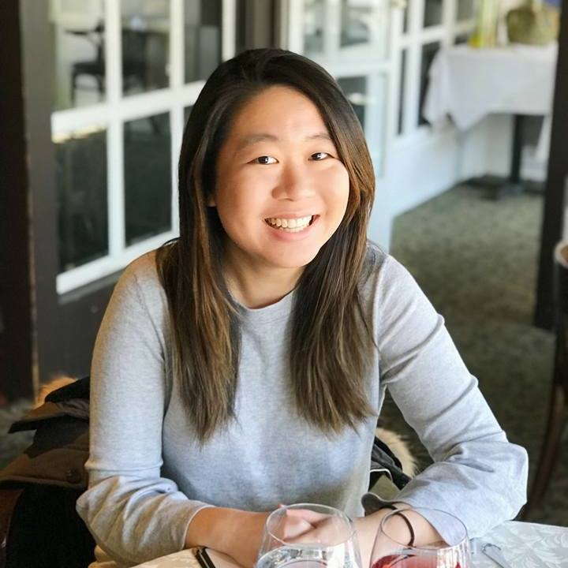

Rolanda Lim
About Me

Rolanda here! You'll probably find me checking out the latest restaurants featured on blogto or window shopping and
wishing I had more money. I am pretty adventurous when it comes to food and will try anything as long as it's not
alive or spicy. I love exploring new restaurants with my friends and family and watch travel/food vlogs in my free
time. My dream would be to travel the world one day and be able to experience the different cultures and cuisines.
I have a lot of places to visit on my bucket list but unfortunately that list needs extensive funding.
Apart from watching travel/food vlogs and eating my way through downtown Toronto, I also enjoy swimming and hiking.
I guess I have to do something to burn off all those calories. I enjoy exploring new trails and conservation areas
and like being able to step away from the city life and breathe in some fresh air from time to time.
To leave off on a more serious note, my educational background consists of a Bachelor of Commerce from the University
of Toronto as well as a Certificate in Business Analysis from UofT. I am also currently enrolled in the Web Development
Bootcamp at UofT and my goal is to somehow be able to combine all my education and experience and pursue a career
that I love.